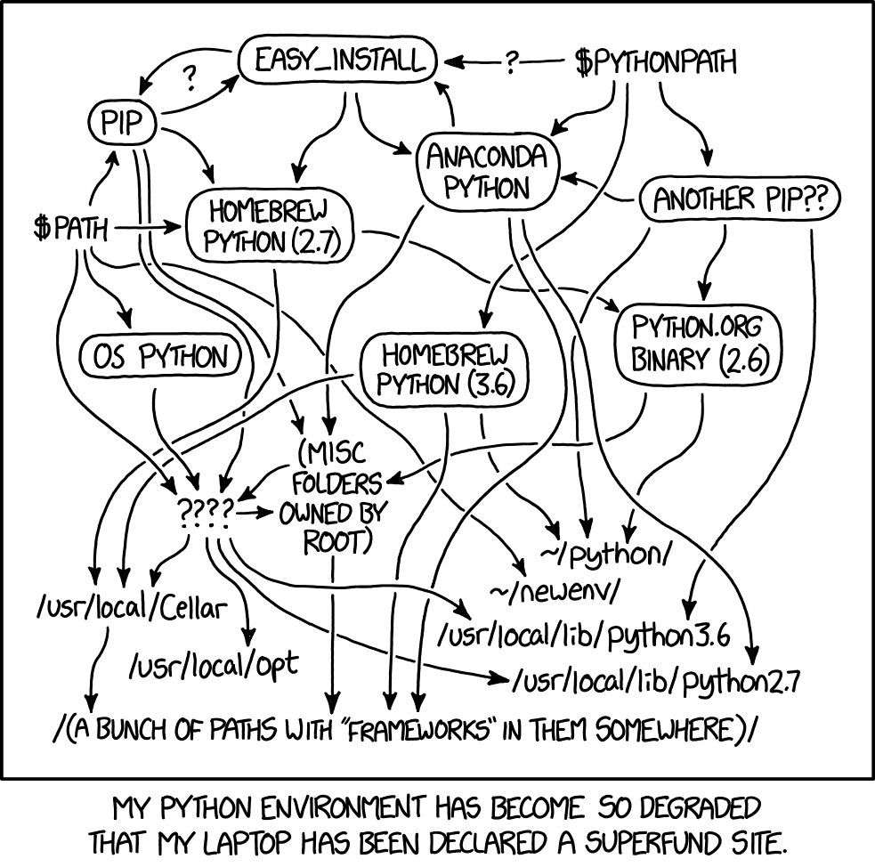
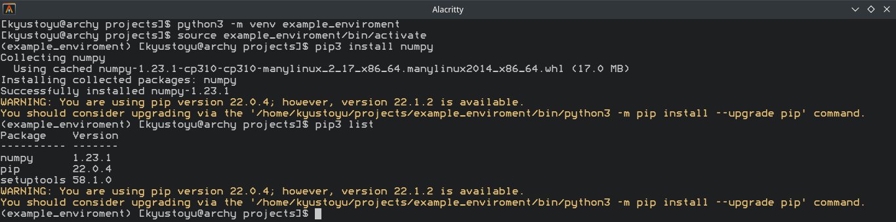
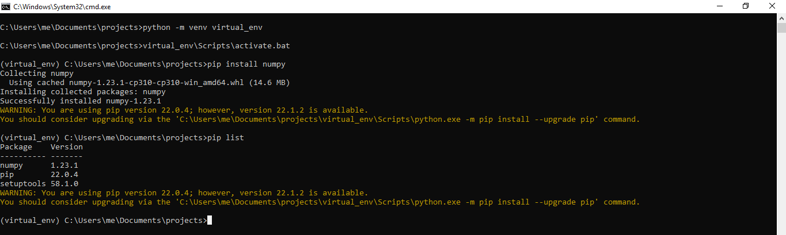
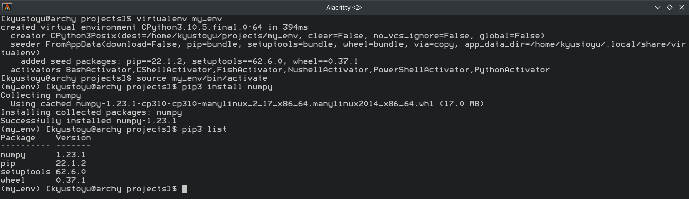
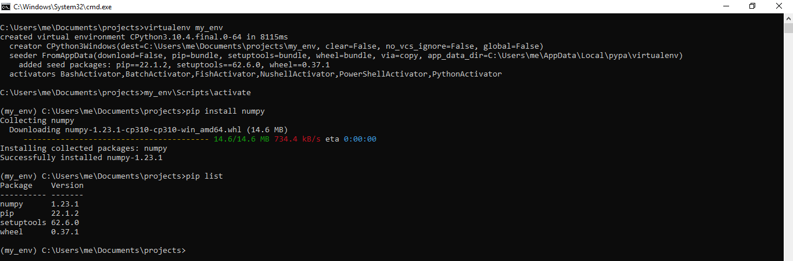

Posted by liz
20 November 2022
How to setup a virtual environment in Python 3
If you're a little bit familiar with Python you probably heard of virtual environments. They may sound like they are just a hassle at first but they are actually pretty easy and using them will definitely save you from a lot of headaches later!

What is a virtual environment?
When you install packages with pip, it will probably install your package to a folder file where your Python interpreter is located. (You can check this with pip show <packageName>) Virtual environments are simply isolated lightweight directories where you can install packages instead of installing them system-wide. It is the recommended way to install Python packages.
Why use virtual environments in python?
In some projects, you need a different version of a library than you're currently using in your main environment. Reinstalling them to just install back is usually time-consuming. By using virtual environments you can install different versions of same the packages and avoid conflicts. This will also make it easier to setup environments for other people to use your code. The only downside of using virtual environments in Python is using a little bit more disk space since there are multiple instances of the same packages.
How to use virtual environments with venv
venv has been a part of the standard Python library since 3.3 and made it easier & faster for using virtual environments. For Linux:
- Create a virtual environment
python3 -m venv <path> - Activate your virtual environment
source /path/bin/activate - Install/list packages
pip3 install <packageName>pip3 listScreenshot:  For Windows: - Create a virtual environment
python3 -m venv <path> - Activate your virtual environment
C:\> <venv>\Scripts\activate.bat - Install/list packages
pip3 install <packageName>pip3 listScreenshot: 
You can leave the virtual environment by closing the terminal or using the deactivate command.
How to use virtual environment with virtualenv
This was the most common way to use virtual environments in Python before the integration of venv into standard library. For Linux:
- Install virtualenv
pip install virtualenv - Create a virtual environment
virtualenv <path> - Activate your virtual environment
source /path/bin/activate - Install/list packages
pip install <packageName>pip listScreenshot:  For Windows: - Install virtualenv
pip install virtualenv - Create a virtual environment
virtualenv <path> - Activate your virtual environment
path\Scripts\activate - Install/list packages
pip install <packageName>pip listScreenshot:  You can leave the virtual environment by closing the terminal or using thedeactivatecommand.
What about the others?
pyenv: If you need to work with multiple versions of Python this is your best choice. Unfortunately, this option is only available for Linux and you need Windows Subsystem for Linux to run on Windows. poetry: Poetry preserves its easiness meanwhile having way more capabilities than other libraries such as virtualenv. You can also separate development and production within an environment with poetry. It also makes publishing packages to PyPi much easier. pipenv: Pipenv is one of the most functional virtual environment tools. Due to this, it might be complex for new users. Conda: If you work with notebooks you might hear or even used Anaconda. It is ideal for working with data science and related tasks but may be heavyweight for other uses.